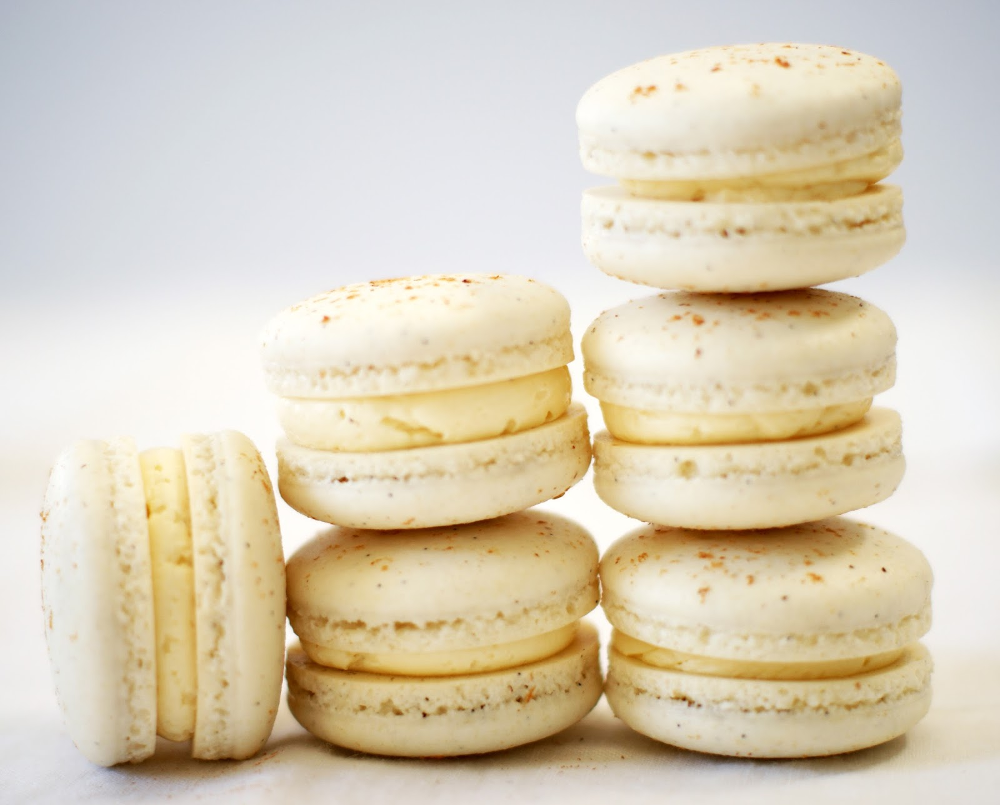

BakeHub
Danielle's Favorite Baking Recipes
The French Macaron

The French Macaron is one of the most difficult desserts to bake. Don’t feel down if the macarons are an utter disaster on your first few attempts!
Difficulty: Hard
Ingredients:
- 1 cup of powdered sugar
- 0.75 cup of almond flour
- 2 large egg whites at room temperature
- 2.5 tablespoons of granulated sugar
- Preheat the oven to 300 Fahrenheit.
- Sift the confectioners sugar and almond flour into a bowl together.
- Using an electric mixer, beat the egg whites on low speed until airy and foamy.
- While increasing the speed of the mixer, add in the granulated sugar until soft peaks form. Turn the mixer up to high speed and whisk until stiff peaks form.
- This step is called the macaronage: incorporating the dry ingredients with the egg whites to form the macaron batter. During the macaronage process, always remember the magic number 50. You should mix about 50 times to have the correct consistency of batter. Too much mixing, and your macarons will be deflated and the macarons will be flat. Too little mixing, and your macarons will be misshaped and have bumps all along the skin. Knowing all of this, in thirds, add the egg white mixture into the dry mixture and fold until fully incorporated.
- Carefully transfer the macaron batter into a piping bag.
- Take out a flat baking sheet and line it with parchment paper or a SILPAT Baking Mat.
- Pipe the batter into ¾ inch circles on the mat. Be sure to space the rounds about an inch apart from each other so they don’t touch.
- Once you have finished piping, tap the baking sheet onto the table to release the trapped air from the macaron batter rounds.
- This is one of the most important steps in the process. Allow the tray with the macaron batter rounds to sit in a room at room temperature for at least 45 minutes.This will allow your macarons to develop a skin, which is crucial to have a great macaron.
- Bake the sheet of macarons in the oven for about 15 minutes, rotating the baking sheet halfway through. Once the macarons are crisp and firm (you can test this by gently pushing the macaron to see if it is attached to its feet), immediately take them out of the oven.
- Let the macarons cool on the sheet for a few minutes. Then, carefully peel them off the parchment paper/SILPAT mat.
- Once the macarons are fully cooled, fill them with a ganache, buttercream, jam, etc. I would recommend these two delicious macaron fillings _link to other page___
Recipe adapted from Honeysuckle